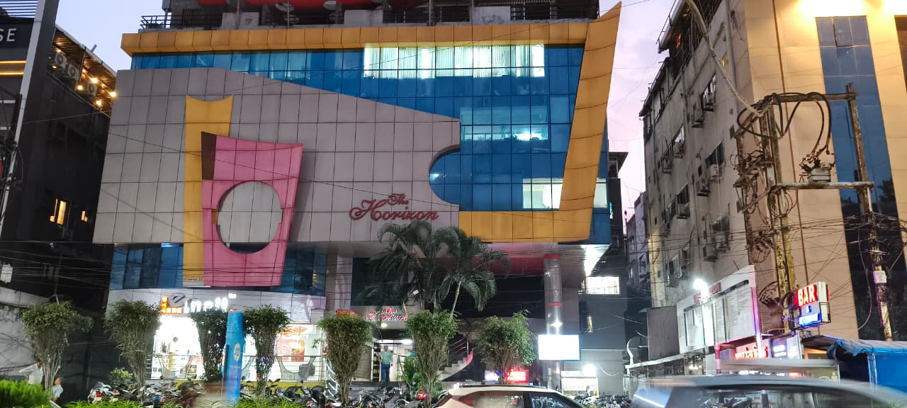
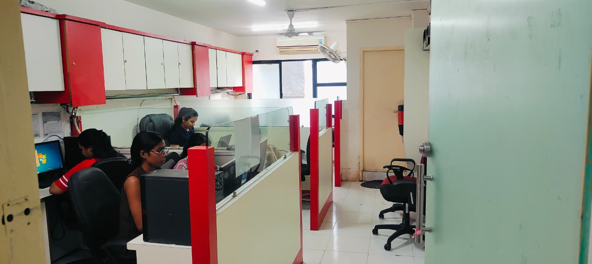
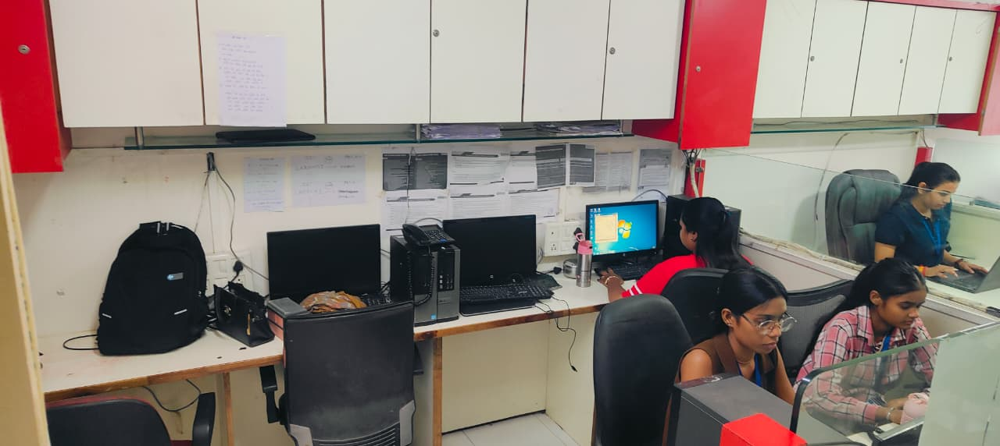

01
▣
Credit card collections
Early and late-stage follow-ups, promise-to-pay tracking and structured handling of overdue card accounts.
- Bucket-wise calling
- Escalation tracking
Sony Associates supports banks and NBFCs with disciplined tele-calling, field recovery and portfolio reporting — built around lender processes and local on-ground reach.
We combine trained calling teams, field executives and structured reporting so every allocation has clear ownership from the first follow-up to final reconciliation.
See how we work ↗Our approach is straightforward: understand the lender's process, assign the right people, document every meaningful interaction and keep communication transparent.
Separate teams, defined workflows and reporting aligned to the allocation — whether the work is primarily digital, telephonic or field-led.
Early and late-stage follow-ups, promise-to-pay tracking and structured handling of overdue card accounts.
Organised collection support for unsecured retail and small-business lending portfolios.
Field-led EMI follow-up and recovery for two-wheelers, cars and used-vehicle portfolios.
Support for consumer finance, EMI-linked dues and postpaid or pay-later balances.
Doorstep follow-up by local teams, with activity records maintained against the assigned account.
An in-house calling floor for reminders, follow-ups and promise-to-pay monitoring.
Collection performance depends on consistent execution. Our operating model is designed to make ownership, documentation and reporting visible.
Accounts stay organised by lender and product, with staff familiar with the relevant process.
Important activity is documented systematically for review, audit and reconciliation.
MIS can be structured around the fields, frequency and visibility expected by the lender.
Field teams bring practical knowledge of Indore and surrounding branch markets across MP.
Our Indore operating centre combines calling capacity, connected systems and field communication tools under one management structure.
Plan a portfolio allocation ↗Every stage has an owner, a record and a clear handoff.
Accounts are organised by bucket, product and location before being assigned to the relevant team.
Teams make scheduled contacts, record outcomes and track commitments for the next action.
Where required, local staff conduct visits and follow the lender's prescribed collection process.
Activity, collections and reconciliation are compiled into the agreed reporting flow.
Our current portfolio includes established banks, NBFCs and digital lending platforms. Client relationships and allocations may vary by product, geography and mandate.
Corporate operations are managed from Indore, supported by branch and field coverage designed for multi-location portfolios.
Our operating centre is located at The Horizon in South Tukoganj, Indore. The facility supports our calling, coordination and day-to-day portfolio operations.

These photographs show the actual office environment and workspace used by our team in Indore.


Tell us the product, bucket, approximate volume and locations. We'll discuss a practical coverage and reporting plan.